One-change mockups on real Solen pages
Each one changes a single thing on the live page. Left or top: today. Right or bottom: with the change. Videos play the real interaction.
1Booking: selected date and time turn black
Today they are blue. Your newest pick (23 Sep) is selected = black; your M30 (12 Aug) also made the tapped day ink.
Evidence: X posts 534, 546
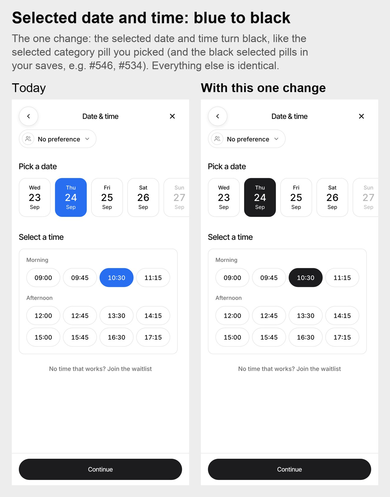
2Salon calendar: the selected day turns black
Today it is light grey on a light grey page.
Evidence: Your 23 Sep pick, X posts 534, 546
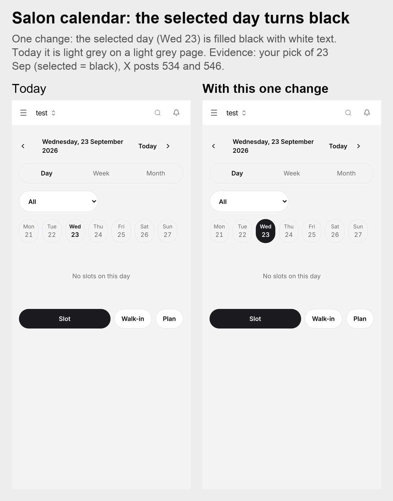
3Booking: the same Continue arrow on every step
Services and stylist steps show the arrow; the date and time step does not.
Evidence: Measured on the live flow
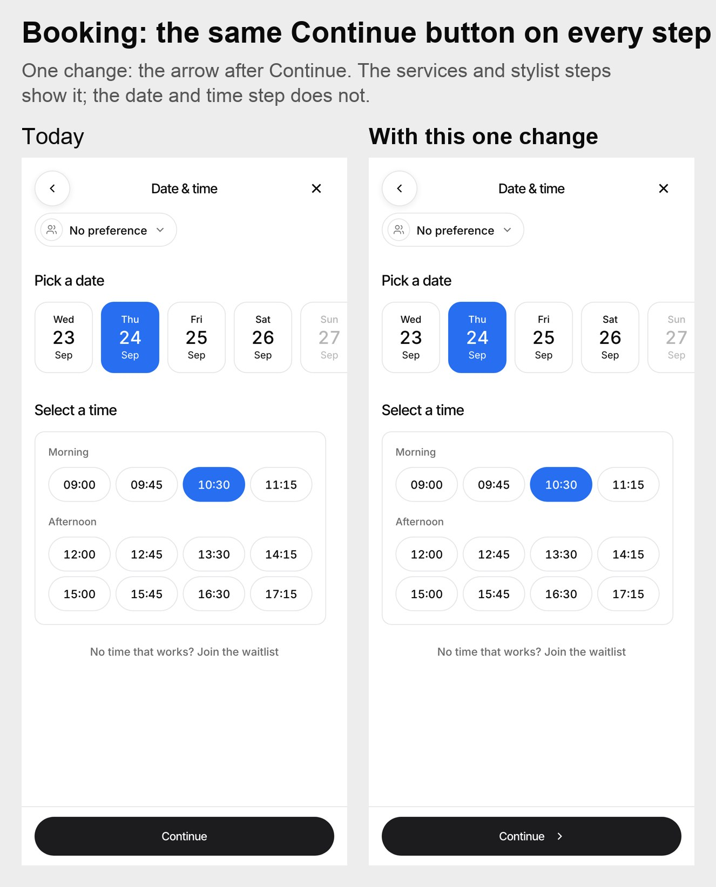
4Adding a service: the tick draws itself
Stroke draws in 0.26 s instead of a blur fade.
Evidence: X post 153
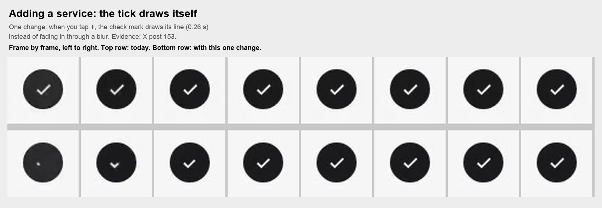
5Closing a sheet: it slides back down
Today the service sheet disappears in one frame (measured 0 ms) although it slides up when it opens.
Evidence: iPhone sheet behaviour
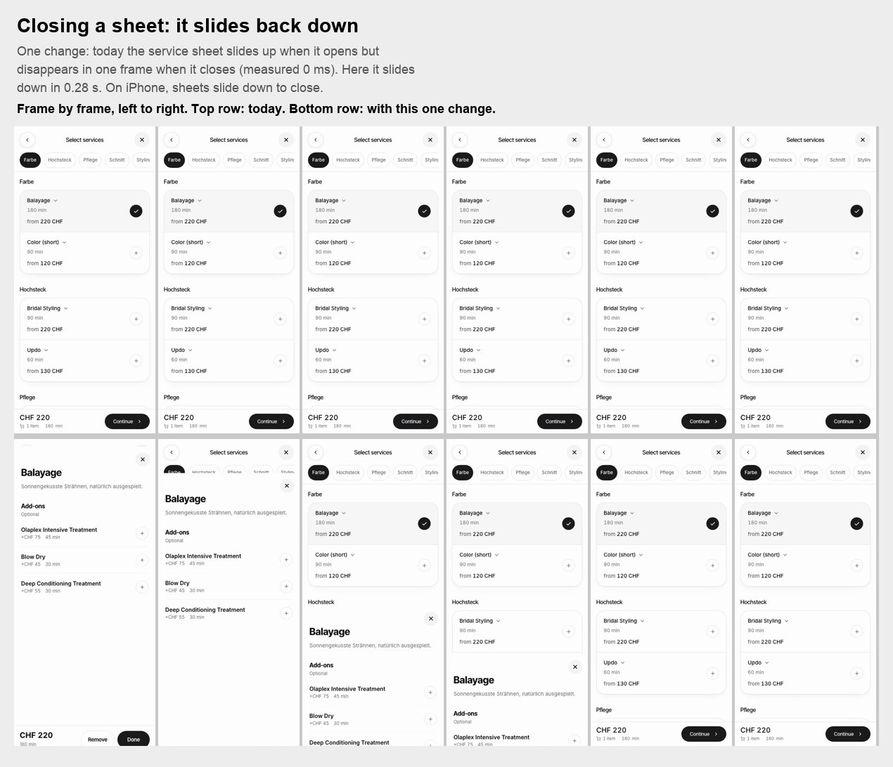
6Opening a sheet: the page behind steps back
The page behind shrinks slightly and dims; the sheet keeps a rounded top.
Evidence: X post 205 (Scale + Dim)
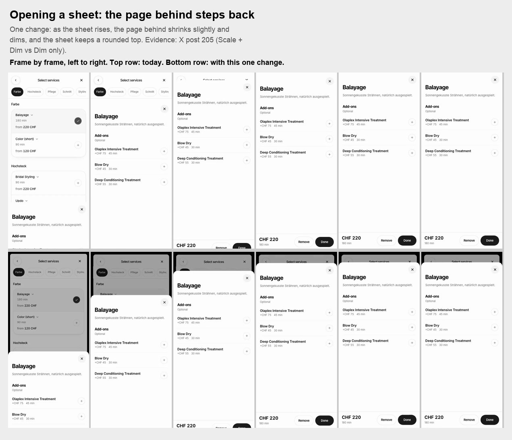
7Search: a white strip behind the search bar on scroll
Photos no longer slide up around the bar. The bar keeps its size (your M30).
Evidence: X post 81
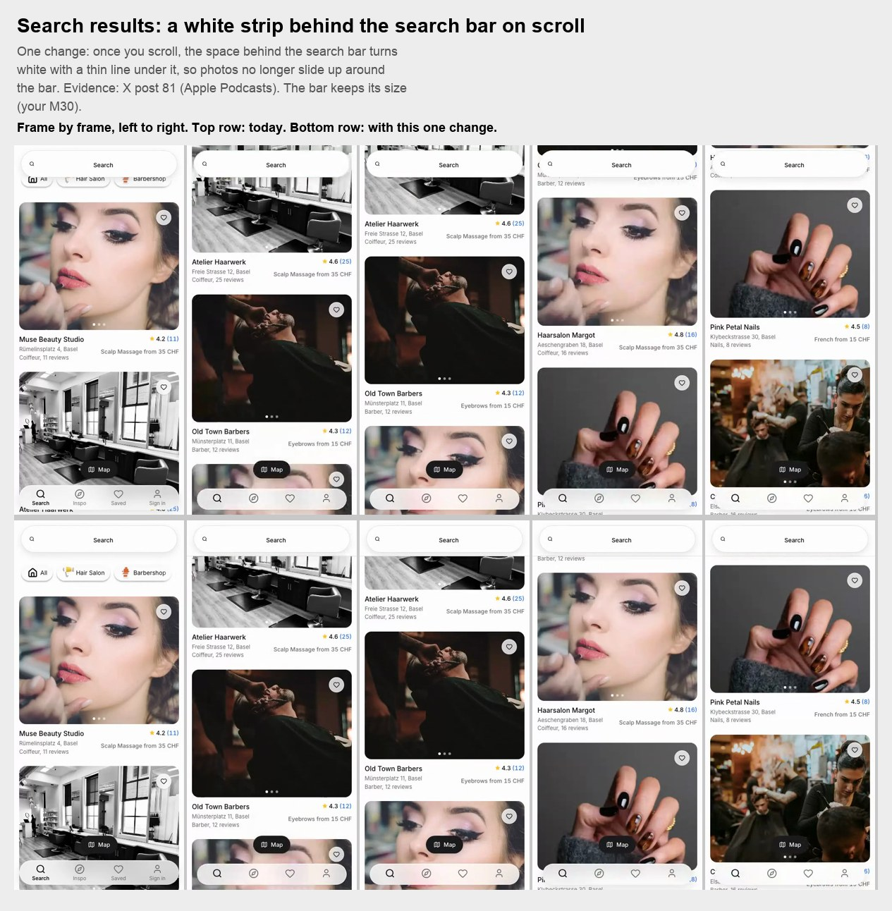
8Dashboard: the "Setup" label becomes readable
Star yellow on white is 1.6 to 1; the legal minimum is 4.5 to 1. Grey is 5.3 to 1.
Evidence: WCAG 2.2 AA
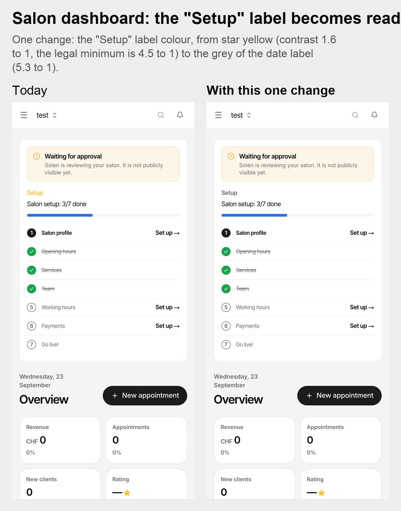
9Dashboard settings: labels in normal case
"BOOKINGS" becomes "Bookings".
Evidence: Your label rule (normal-case 13px semibold)
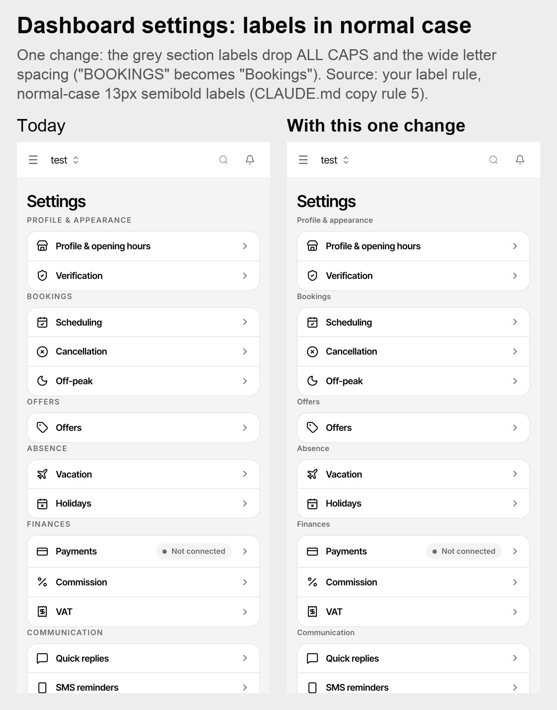
10Dashboard settings: space above each label
Today the label touches the card above (0 px). The code asks for 16 px but first:mt-0 cancels it.
Evidence: X posts 61, 121
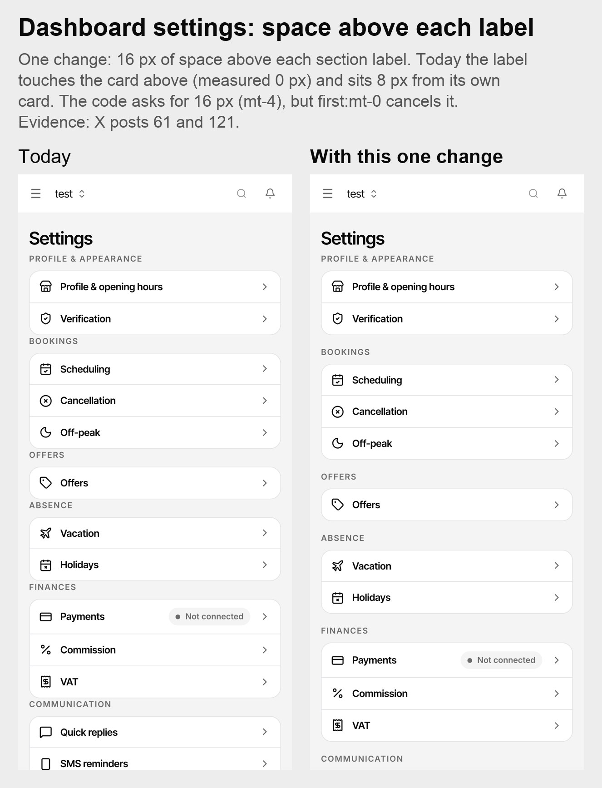
11Salon page tabs: the underline slides
One shared underline slides to the tapped tab in 0.3 s.
Evidence: Airbnb tab bar, measured
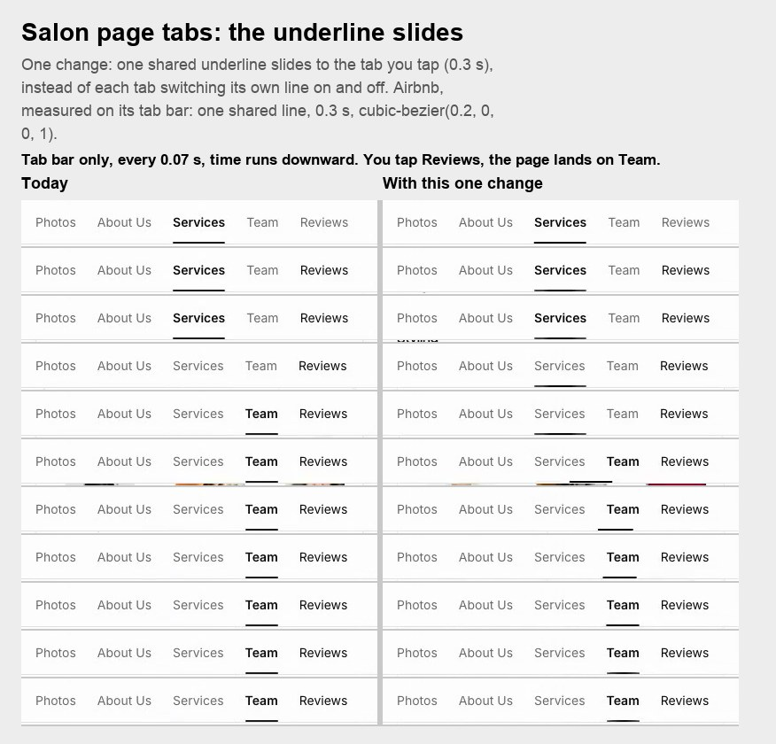
12Booking "Your hair": selected pills turn black
The pre-selected pills (Wellig, Mittel) turn black instead of light grey.
Evidence: Your 23 Sep pick, X post 546
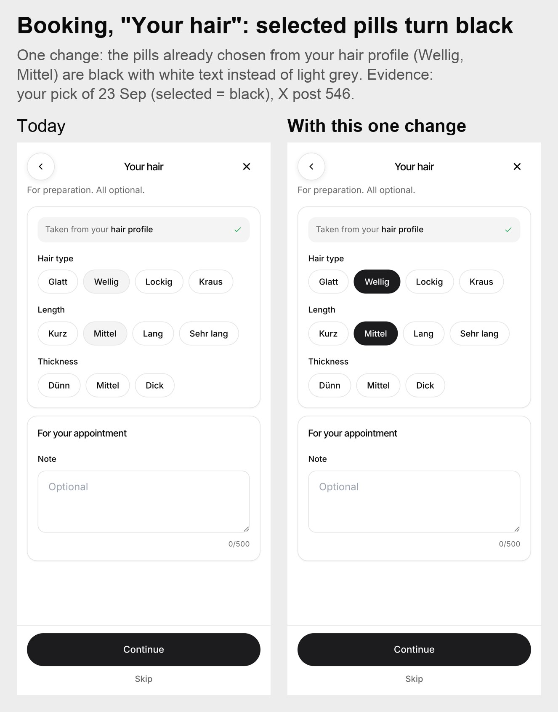